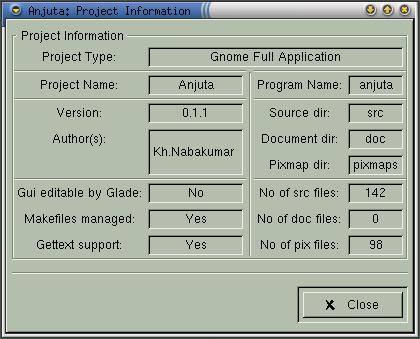

|
|
Anjuta Manual version 0.1Copyright (c) Kh. Naba Kumar Singh |
| Contents | Index | Shortcuts |
| PREV:Adding and removing files | UP:Concept of project management | NEXT:Managing make files |

Activate Project->Project Information and a window (shown above) will appear which will give the information about the currently opened Project.